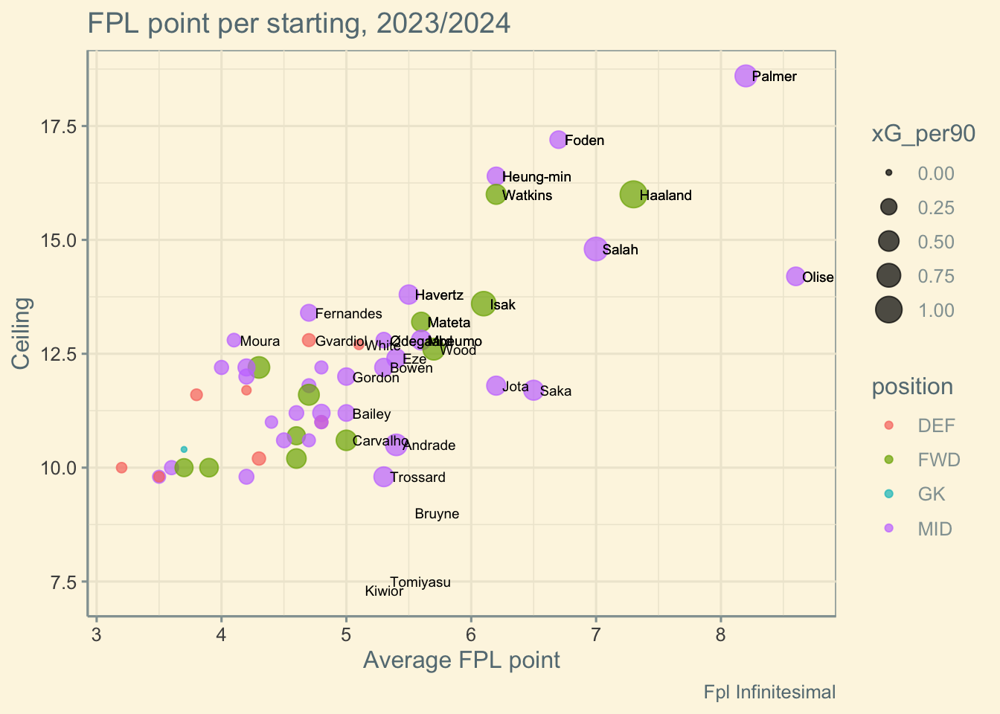

| FPL Season 2023/2024, Ranking by average point per start | |||||||||||
| starts | per 90 mins | Point per Start | Average per Start | Opponents contribute to past ceiling: | |||||||
|---|---|---|---|---|---|---|---|---|---|---|---|
| xG | Delta | FPL point | mean* | ceiling* | Home | Away | @Big* | ||||
| Michael Olise | 14 | 0.38 | 0.33 | 8.6 | 14.2 | 10.4 | 6.7 | 9.2 | SHU/MUN/BRE/WHU/wol | ||
| Cole Palmer | 29 | 0.60 | 0.16 | 8.2 | 18.6 | 10.8 | 6.2 | 7.8 | EVE/MUN/lut/BUR/SHU | ||
| Erling Haaland | 29 | 1.04 | -0.09 | 7.3 | 16.0 | 7.7 | 6.9 | 7.3 | WOL/FUL/mun/che/bur | ||
| Mohamed Salah | 28 | 0.74 | -0.10 | 7.0 | 14.8 | 8.2 | 5.7 | 6.0 | EVE/BRE/NEW/bha/cry | ||
| Phil Foden | 33 | 0.32 | 0.28 | 6.7 | 17.2 | 7.5 | 5.8 | 4.6 | bre/AVL/bha/MUN/WHU | ||
| Bukayo Saka | 35 | 0.47 | 0.02 | 6.5 | 11.7 | 6.3 | 6.6 | 6.1 | whu/bur/TOT/tot/NFO | ||
| Ollie Watkins | 37 | 0.47 | 0.06 | 6.2 | 16.0 | 6.0 | 6.3 | 3.5 | BHA/shu/ful/lut/BRE | ||
| Son Heung-min | 34 | 0.35 | 0.17 | 6.2 | 16.4 | 5.9 | 6.4 | 6.0 | bur/NEW/avl/ars/FUL | ||
| Diogo Jota | 14 | 0.41 | 0.38 | 6.2 | 11.8 | 7.3 | 5.4 | 3.0 | bou/BOU/ful/BRE/CHE | ||
| Alexander Isak | 27 | 0.81 | 0.03 | 6.1 | 13.6 | 7.8 | 4.5 | 4.5 | WHU/bre/AVL/whu/SHU | ||
Fpl Infinitesimal
|
|||||||||||
Searching for Candidates
To begin, I intend to evaluate the past performance of players from the 2023/2024 season to identify interesting candidates for my team. (I will analyze the 2024/2025 fixture in the next post.) What qualifications should I consider?
Candidate Qualifications:
Nailed-On Starter: Ensure the player consistently starts to maximize scoring opportunities.
Strong Performance History: Look for players with a history of strong performances in previous seasons or recent matches.
Favorable Fixtures: Prioritize players with upcoming matches against weaker opponents.
Penalty Taker Target players who take free kicks, corners, or penalties.
Good Value: Evaluate points per million and identify budget-friendly options.
Fixture-Proof: Choose world-class players who can perform well even against tough opponents.
Low Injury Risk: Select players with a history of staying fit and avoiding injuries.
Template vs. Differential: Balance between popular picks (template players) and unique selections (differentials).
High Ceiling: Focus on players with the potential for explosive returns.
I’ve put together a table summarizing the data for the 2023/2024 season. The table is ranked by average FPL points per starting game, which is a good starting point. It also includes the average xG (expected goals) per 90 minutes and their xG Delta, which is the difference between actual goals and xG (average per 90 minutes). The xG Delta might indicate things like the player’s shooting quality(a skilled finisher), variance, or even just luck—I’ll let you decide for each player!
I’ve also added some data to show the player’s CEILING, which I personally find really interesting. I calculated this by averaging each player’s best five gameweek FPL points and noting the opponent teams that helped them reach that ceiling. I think it’s fun to dive into! You might be able to spot even more insights with your football knowledge than me! — feel free to share any tips with me, as I consider myself below average in this area.
I’ve also included the average FPL points separated by games played at home, away, and against top teams like MCI, ARS, LIV, CHE, TOT, and MUN. (I know MUN isn’t the toughest match, but I’ve got to support my team!). I believe this will help in choosing the captain each week.
*Please note that the xG and FPL points do not exclude penalty-taking. Keep this in mind when comparing and analyzing each player.
Top10 by average point of season 2023/2024
Let’s begin with Top 10 of the maximum FPL point average per starting;
Olise, His data is superb! So, Bayern Munich has already decided to buy him.
Palmer, Palmer was phenomenal last season, achieving the highest point average and ceiling. Chelsea = “Palmer’s FC,” especially with his remarkable contributions at home, including against the Big 6. If he maintains similar opportunities in the 2023/2024 season, Palmer could continue to be a significant threat, particularly in home matches. The only concern is Chelsea’s form under their new manager, which could impact Palmer’s role or position. This year, his price is set at 10.5, making him a great value compared to Salah (12.5) and Haaland (15.0). It’s crucial to check his fitness for Gameweek 1.
Haaland’s xG is exceptionally high = MONSTER, indicating a constant threat, though he slightly underperformed his xG. His FPL points per start are still strong, with a notable ceiling of 16.0. Unlike other players in the league, away games aren’t a problem for him. You must decide if he’s worth his price of 15.0, especially when compared to other combinations for budget management.
Salah has a solid xG, but like Haaland, he has slightly underperformed his expected goals. His FPL points per start are strong, especially in home matches, where his consistency makes him a reliable choice. If you want to challenge Salah, it could be during away games. The only concern is how Liverpool will perform under their new manager.
Foden is special. He has an average xG but a large xG delta across 33 starts, showing his efficiency with chances. His FPL points per start reflect a very high ceiling, especially in favorable matches. Foden’s impact may fluctuate based on the opposition, but when he’s in form, his potential is significant, making him a potentially explosive option. We might consider avoiding him in big matches.
Jota is special, boasting the highest xG per 90 minutes, but his limited playing time is a concern. His average points are based on just 60-70 minutes per match. If he played the full 90 minutes, he could be just as great a pick as Salah, especially at Home !!.
Saka has performed closely in line with his xG, indicating a consistent level of performance. His FPL points are steady, also solid at away from home or against the Big 6. The stats suggest only a small upside, possibly limited by Arteta’s tactics.
Watkins’ xG and delta are modest, suggesting he’s performing as expected. His high ceiling indicates he can deliver big points in favorable matches, not Big 6.
Son is Special also, has slightly overperformed his xG, and his high ceiling suggests he’s capable of significant points, particularly against upper mid-table teams. Son remains a key player with the potential to deliver in a variety of match situations.
Isak’s xG is strong at 0.81, and he’s performed close to expectations. His FPL points are consistent, with a solid average at home. The only concern is his performance in away games and against the Big 6. He is candidate captain in gw1 !!
Wrap-up
- Consistent Performers: Regularly high xG, solid FPL points per start, expected to maintain consistency = fixture proof.
- Haaland, Salah, Saka
- High Potential for Explosive Returns: High ceiling, can deliver big returns in favorable fixtures.
- Palmer, Foden, Son
- Fixture-Dependent Performers: High ceiling in favorable fixtures.
- Watkins, Isak, Jota
Ranking 11-30
| FPL Season 2023/2024, Ranking by average point per start | |||||||||||
| starts | per 90 mins | Point per Start | Average per Start | Opponents contribute to past ceiling: | |||||||
|---|---|---|---|---|---|---|---|---|---|---|---|
| xG | Delta | FPL point | mean* | ceiling* | Home | Away | @Big* | ||||
| Chris Wood | 20 | 0.59 | 0.11 | 5.7 | 12.6 | 4.8 | 6.8 | 2.6 | new/LUT/bur/BOU/lut | ||
| Jean-Philippe Mateta | 25 | 0.43 | 0.20 | 5.6 | 13.2 | 6.9 | 4.3 | 3.9 | AVL/WHU/NEW/mci/nfo | ||
| Bryan Mbeumo | 22 | 0.45 | -0.03 | 5.6 | 12.8 | 4.7 | 6.6 | 5.2 | ful/BUR/che/bou/lut | ||
| Kai Havertz | 30 | 0.42 | 0.02 | 5.5 | 13.8 | 5.1 | 6.0 | 6.1 | NEW/shu/bha/CHE/tot | ||
| Kevin De Bruyne | 15 | 0.18 | 0.12 | 5.5 | 9.0 | 2.9 | 7.8 | 3.8 | cry/nfo/bha/BUR/liv | ||
| Eberechi Eze | 24 | 0.40 | 0.08 | 5.4 | 12.4 | 6.7 | 4.2 | 4.4 | AVL/SHU/WHU/liv/BRE | ||
| Richarlison de Andrade | 18 | 0.58 | 0.09 | 5.4 | 10.5 | 6.2 | 4.6 | 4.5 | NEW/eve/nfo/EVE/BOU | ||
| Martin Ødegaard | 35 | 0.22 | 0.01 | 5.3 | 12.8 | 4.5 | 6.1 | 4.2 | bou/bur/cry/LUT/CHE | ||
| Jarrod Bowen | 34 | 0.36 | 0.12 | 5.3 | 12.2 | 5.2 | 5.6 | 5.1 | BRE/LIV/bha/new/bou | ||
| Leandro Trossard | 18 | 0.46 | 0.20 | 5.3 | 9.8 | 4.3 | 7.2 | 5.5 | BUR/bur/mun/CRY/whu | ||
| Takehiro Tomiyasu | 10 | 0.14 | 0.02 | 5.3 | 7.5 | 6.8 | 3.8 | 4.3 | WOL/EVE/bre/CHE/BOU | ||
| Benjamin White | 35 | 0.04 | 0.08 | 5.1 | 12.7 | 5.2 | 5.1 | 5.0 | CHE/bou/shu/BRE/MCI | ||
| Jakub Kiwior | 11 | 0.07 | 0.02 | 5.1 | 7.3 | 4.2 | 5.6 | 6.0 | shu/bur/NEW/SHU/whu | ||
| Anthony Gordon | 34 | 0.31 | 0.03 | 5.0 | 12.0 | 7.4 | 2.4 | 6.7 | TOT/CHE/LIV/MUN/SHU | ||
| Leon Bailey | 22 | 0.27 | 0.16 | 5.0 | 11.2 | 6.2 | 3.3 | 3.6 | EVE/BOU/NFO/MCI/BUR | ||
| Rodrigo Muniz Carvalho | 18 | 0.50 | 0.01 | 5.0 | 10.6 | 6.4 | 3.2 | 4.8 | BOU/TOT/BHA/bur/AVL | ||
| Raheem Sterling | 22 | 0.29 | 0.07 | 4.9 | 9.5 | 4.7 | 5.2 | 3.9 | LUT/bur/BOU/mci/MCI | ||
| Moussa Diaby | 25 | 0.31 | -0.06 | 4.8 | 11.2 | 6.4 | 3.4 | 2.7 | WOL/LUT/bur/BOU/BHA | ||
| Bernardo Veiga de Carvalho e Silva | 29 | 0.12 | 0.09 | 4.8 | 12.2 | 3.9 | 5.4 | 3.0 | BOU/whu/eve/ful/WHU | ||
| Trent Alexander-Arnold | 25 | 0.12 | 0.01 | 4.8 | 11.0 | 5.8 | 3.9 | 4.0 | FUL/AVL/shu/MUN/ful | ||
Fpl Infinitesimal
|
|||||||||||
Havertz has a very high ceiling and performs well in away games and against the Big 6. He’s a very interesting option !
Gordon, not large
Def?
| FPL Season 2023/2024, Ranking by average point per start | |||||||||||
| starts | per 90 mins | Point per Start | Average per Start | Opponents contribute to past ceiling: | |||||||
|---|---|---|---|---|---|---|---|---|---|---|---|
| xG | xA | FPL point | mean* | ceiling* | Home | Away | @Big* | ||||
| Trent Alexander-Arnold | 25 | 0.12 | 0.24 | 4.8 | 11.0 | 5.8 | 3.9 | 4.0 | FUL/AVL/shu/MUN/ful | ||
| Andrew Robertson | 18 | 0.10 | 0.23 | 3.7 | 9.4 | 5.0 | 2.8 | 4.0 | TOT/wol/whu/WOL/AVL | ||
| Kieran Trippier | 26 | 0.03 | 0.28 | 4.2 | 11.7 | 5.2 | 3.2 | 2.8 | shu/BUR/MUN/CRY/ARS | ||
| Pedro Porro | 35 | 0.09 | 0.18 | 3.9 | 9.3 | 3.9 | 3.8 | 2.3 | shu/NFO/BUR/nfo/LIV | ||
| Sergio Reguilón | 18 | 0.06 | 0.17 | 3.8 | 9.0 | 3.8 | 3.8 | 2.5 | wol/avl/SHU/FUL/LUT | ||
| Malo Gusto | 19 | 0.05 | 0.17 | 3.6 | 8.7 | 3.3 | 4.1 | 1.0 | LUT/bha/CRY/bou/cry | ||
| Joško Gvardiol | 26 | 0.12 | 0.08 | 4.7 | 12.8 | 4.6 | 4.7 | 3.8 | ful/nfo/LUT/ARS/NFO | ||
| Takehiro Tomiyasu | 10 | 0.14 | 0.05 | 5.3 | 7.5 | 6.8 | 3.8 | 4.3 | WOL/EVE/bre/CHE/BOU | ||
| Oleksandr Zinchenko | 20 | 0.03 | 0.14 | 4.8 | 8.8 | 4.9 | 4.8 | 2.2 | BUR/bre/LUT/SHU/BHA | ||
| Marcos Senesi | 26 | 0.08 | 0.09 | 3.8 | 11.6 | 3.9 | 3.8 | 3.2 | mun/cry/BHA/ful/MUN | ||
| Nathan Aké | 24 | 0.11 | 0.05 | 3.9 | 8.4 | 4.6 | 3.3 | 2.7 | EVE/BOU/FUL/bur/LIV | ||
| Cristian Romero | 33 | 0.10 | 0.05 | 3.2 | 8.6 | 3.0 | 3.5 | 1.1 | CRY/WHU/lut/FUL/avl | ||
| Benjamin White | 35 | 0.04 | 0.11 | 5.1 | 12.7 | 5.2 | 5.1 | 5.0 | CHE/bou/shu/BRE/MCI | ||
| Gabriel dos Santos Magalhães | 34 | 0.13 | 0.02 | 4.3 | 10.2 | 3.8 | 4.8 | 4.1 | CRY/whu/liv/MCI/BOU | ||
| James Tarkowski | 38 | 0.07 | 0.07 | 3.1 | 9.0 | 3.7 | 2.5 | 1.6 | bre/SHU/nfo/BOU/LIV | ||
Fpl Infinitesimal
|
|||||||||||
GoalKeeper?
| FPL Season 2023/2024, Ranking by average point per start | ||||||||||
| starts | FPL | Point per Start | Average per Start | Opponents contribute to past ceiling: | ||||||
|---|---|---|---|---|---|---|---|---|---|---|
| FPL point | mean* | ceiling* | Home | Away | @Big* | |||||
| David Raya Martin | 32 | 135 | 4.2 | 6.5 | 4.3 | 4.2 | 3.4 | wol/eve/CRY/bou/MCI | ||
| Jordan Pickford | 38 | 153 | 4.0 | 9.7 | 5.1 | 3.0 | 3.1 | CHE/ful/LIV/BRE/BOU | ||
| Alisson Ramses Becker | 28 | 107 | 3.8 | 6.7 | 4.4 | 3.3 | 3.0 | AVL/EVE/NFO/BRE/lut | ||
| Alphonse Areola | 31 | 116 | 3.7 | 10.4 | 3.8 | 3.7 | 4.3 | eve/BHA/CHE/ars/MUN | ||
| André Onana | 38 | 133 | 3.5 | 9.2 | 3.4 | 3.6 | 2.7 | EVE/liv/WOL/eve/LUT | ||
| Bernd Leno | 38 | 133 | 3.5 | 9.3 | 3.6 | 3.4 | 2.3 | eve/cry/WHU/whu/EVE | ||
| Emiliano Martínez Romero | 34 | 115 | 3.4 | 9.4 | 3.2 | 3.7 | 4.0 | ARS/WOL/MCI/eve/ars | ||
| Ederson Santana de Moraes | 33 | 112 | 3.4 | 7.4 | 3.4 | 3.4 | 2.9 | bou/mun/EVE/bha/tot | ||
| Norberto Murara Neto | 32 | 110 | 3.4 | 9.0 | 3.5 | 3.4 | 3.8 | liv/CHE/NEW/FUL/cry | ||
| Martin Dubravka | 22 | 75 | 3.4 | 7.4 | 3.4 | 3.4 | 3.8 | ful/liv/FUL/WOL/TOT | ||
| Sam Johnstone | 20 | 68 | 3.4 | 7.8 | 3.3 | 3.5 | 3.0 | mun/NFO/bur/FUL/shu | ||
| Mark Flekken | 37 | 119 | 3.2 | 9.0 | 3.6 | 2.8 | 3.5 | BHA/MCI/FUL/wol/SHU | ||
| Bart Verbruggen | 21 | 68 | 3.2 | 6.2 | 3.0 | 3.5 | 2.2 | NFO/bre/AVL/eve/shu | ||
| José Malheiro de Sá | 35 | 107 | 3.1 | 8.0 | 2.8 | 3.3 | 2.2 | eve/bha/nfo/SHU/EVE | ||
| Guglielmo Vicario | 38 | 112 | 3.0 | 6.9 | 3.1 | 2.8 | 2.5 | MUN/bou/lut/FUL/nfo | ||
Fpl Infinitesimal
|
||||||||||
Ceiling and Average FPL point, per starting

xG per 90
xG Delta
You can play around by yourself in DataTable.